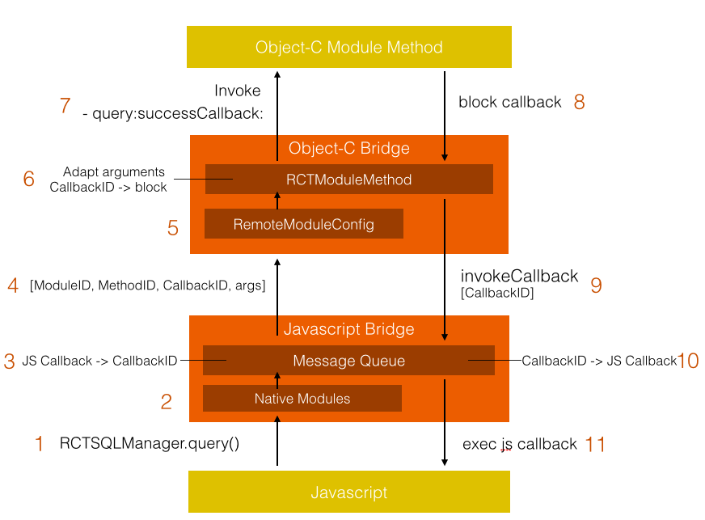

本系列文章作为学习RN期间的总结
- React Native如何集成到现有项目中
- React Native和Native间的通信实践
- RCTRootView、RCTBridge做了什么
- Object-C和JS通信概述
流程梳理
 首先，无论是RN端还是Native端都会持有一个bridge负责对来自不同端的模块进行桥街，再做消息处理。现附上一张来自JSPath作者Bang的图。 RN调用某个方法向Native发送消息，方法首先会被分解成ModuleId、MethodId和参数，发送到OCBridge。那么OCBridge是如何接受的呢？（因为对JS代码不熟悉这里只讨论OC部分）
在第一次初始化ReactNative的时候模块信息会被初始化，包括模块名称、方法名。在注册模块的时候我们会用到RCT_EXPORT_MODULE();这个宏，宏展开
#define RCT_EXPORT_MODULE(js_name) \
RCT_EXTERN void RCTRegisterModule(Class); \
+ (NSString *)moduleName { return @#js_name; } \
+ (void)load { RCTRegisterModule(self); }
方法1:如果自定义了模块的名称就使用自定义的名称而不是原类的名称
方法2:在+(void)load方法里对类进行一次注册，注册代码如下
void RCTRegisterModule(Class moduleClass)
{
static dispatch_once_t onceToken;
dispatch_once(&onceToken, ^{
RCTModuleClasses = [NSMutableArray new];
});
RCTAssert([moduleClass conformsToProtocol:@protocol(RCTBridgeModule)],
@"%@ does not conform to the RCTBridgeModule protocol",
moduleClass);
// Register module
[RCTModuleClasses addObject:moduleClass];
}
如果当前类遵循协议RCTBridgeModule,就把它放到一个静态变量数组RCTModuleClasses中。所以启动之后，所有RN需要的模块都会被动态载入。
这些模块会被存储在三张表中_moduleDataByName、_moduleDataByID、_moduleClassesByID,在初始化的时候通过遍历该数组来初始化。
NSDictionary<NSString *, RCTModuleData *> *_moduleDataByName;
NSArray<RCTModuleData *> *_moduleDataByID;
NSArray<Class> *_moduleClassesByID;
for (Class moduleClass in RCTGetModuleClasses()) {
NSString *moduleName = RCTBridgeModuleNameForClass(moduleClass);
// Check for module name collisions
RCTModuleData *moduleData = moduleDataByName[moduleName];
if (moduleData) {
if (moduleData.hasInstance) {
// Existing module was preregistered, so it takes precedence
continue;
} else if ([moduleClass new] == nil) {
// The new module returned nil from init, so use the old module
continue;
} else if ([moduleData.moduleClass new] != nil) {
// Both modules were non-nil, so it's unclear which should take precedence
RCTLogError(@"Attempted to register RCTBridgeModule class %@ for the "
"name '%@', but name was already registered by class %@",
moduleClass, moduleName, moduleData.moduleClass);
}
}
// Instantiate moduleData (TODO: can we defer this until config generation?)
moduleData = [[RCTModuleData alloc] initWithModuleClass:moduleClass
bridge:self];
moduleDataByName[moduleName] = moduleData;
[moduleClassesByID addObject:moduleClass];
[moduleDataByID addObject:moduleData];
}
分别是模块名称、模块名称对应的对象RCTModuleData、模块名称和模块对象的映射字典，方便后续使用。
这时候还有一个重要的东西需要处理就是callback，JSBridge在传递消息的时候会把callback缓存起来，仅仅把callbackId传递到OCBridge。
这时候OCBridge拿到了传过来的ModuleId、MethodId、callbackId，再通过Native端的配置表分别取出模块和方法。模块会被转化为RCTModuleData对象，方法都会被转化为一个RCTModuleMethod对象，看一下这个对象
{
Class _moduleClass;
const RCTMethodInfo *_methodInfo;
NSString *_JSMethodName;
SEL _selector;
NSInvocation *_invocation;
NSArray<RCTArgumentBlock> *_argumentBlocks;
}
发现了_moduleClass、_argumentBlocks、_invocation、_selector这时候就很容易想到消息转发的最后一个阶段，将消息的目标、selector、参数封装到NSInvocation中进行消息转发。
刚才上面讲到模块的注册，那么方法是如何筛选的呢？注意下面的3个宏
#define RCT_EXPORT_METHOD(method) \
RCT_REMAP_METHOD(, method)
#define RCT_REMAP_METHOD(js_name, method) \
_RCT_EXTERN_REMAP_METHOD(js_name, method, NO) \
- (void)method;
#define _RCT_EXTERN_REMAP_METHOD(js_name, method, is_blocking_synchronous_method) \
+ (const RCTMethodInfo *)RCT_CONCAT(__rct_export__, RCT_CONCAT(js_name, RCT_CONCAT(__LINE__, __COUNTER__))) { \
static RCTMethodInfo config = {#js_name, #method, is_blocking_synchronous_method}; \
return &config; \
}
在我们具体定义方法的时候并没有-(void)字符串前缀，因为在预编译的时候，宏会帮我们加上这段字符（看第二个宏）。
第三个宏主要实现了字符串的拼接，(__LINE__, __COUNTER__)的意思是为当前的宏生成一个唯一的tag（行数+一个数字），再和前面的js_name连接，最后再和__rct_export__连接，大概像这样
-(void)__rct_export__8976699MethodName{
//
}
其实COUNTER是一个预定义的宏，这个值在编译过程中将从0开始计数，每次被调用时加1。
所有JSBridge传过来的参数都是NSNumber,OCBridge会把它们转化成基本类型和字符串。上面在提到JSBridge传参数的时候会带一个callbackId，这时候OCBridge会根据这个Id生成一个callback，保存在内存中。
这时候OC执行方法的调用，执行block。将参数和callbackId传到JSBridge，JSBridge根据Id找到之前缓存的JSCallback，进行调用。到这里就完成RN-Native-RN的一个闭环。
JS是怎么调用OC的呢？
其实并不是JS调用OC，而是JS将消息放到一个消息队列里面MessageQueue，等OC来取，这里面还有很多问题值得讨论多长时间取一次；不来取怎么办。有待我们继续研究
为什么OC和JS可以实现这种框架？
要实现这个机制需要语言有动态反射的特性(OC是一门动态语言，消息和消息的target等都是在运行时决定)，即可以通过类/方法名字符串找到对应的类/方法进行调用，没有这特性就做不了。
知识点
- 使用RunLoop让JS线程常驻内存
//RCTJSCExecutor
+ (void)runRunLoopThread
{
@autoreleasepool {
// copy thread name to pthread name
pthread_setname_np([NSThread currentThread].name.UTF8String);
// Set up a dummy runloop source to avoid spinning
CFRunLoopSourceContext noSpinCtx = {0, NULL, NULL, NULL, NULL, NULL, NULL, NULL, NULL, NULL};
CFRunLoopSourceRef noSpinSource = CFRunLoopSourceCreate(NULL, 0, &noSpinCtx);
CFRunLoopAddSource(CFRunLoopGetCurrent(), noSpinSource, kCFRunLoopDefaultMode);
CFRelease(noSpinSource);
// run the run loop
while (kCFRunLoopRunStopped != CFRunLoopRunInMode(kCFRunLoopDefaultMode, ((NSDate *)[NSDate distantFuture]).timeIntervalSinceReferenceDate, NO)) {
RCTAssert(NO, @"not reached assertion"); // runloop spun. that's bad.
}
}
}
static NSThread *newJavaScriptThread(void)
{
NSThread *javaScriptThread = [[NSThread alloc] initWithTarget:[RCTJSCExecutor class]
selector:@selector(runRunLoopThread)
object:nil];
javaScriptThread.name = RCTJSCThreadName;
javaScriptThread.qualityOfService = NSOperationQualityOfServiceUserInteractive;
[javaScriptThread start];
return javaScriptThread;
}
- 通过动态消息转发发送来自RN的消息,RCTModuleMethod
//RCTModuleMethod
NSMethodSignature *typeSignature = [RCTConvert methodSignatureForSelector:selector];
NSInvocation *typeInvocation = [NSInvocation invocationWithMethodSignature:typeSignature];
typeInvocation.selector = selector;
typeInvocation.target = [RCTConvert class];
[argumentBlocks addObject:^(__unused RCTBridge *bridge, NSUInteger index, id json) {
void *returnValue = malloc(typeSignature.methodReturnLength);
[typeInvocation setArgument:&json atIndex:2];
[typeInvocation invoke];
[typeInvocation getReturnValue:returnValue];
[invocation setArgument:returnValue atIndex:index + 2];
free(returnValue);
- 用Runtime拿到所有的类信息和方法
//RCTBridge
void RCTVerifyAllModulesExported(NSArray *extraModules)
{
// Check for unexported modules
unsigned int classCount;
Class *classes = objc_copyClassList(&classCount);
NSMutableSet *moduleClasses = [NSMutableSet new];
[moduleClasses addObjectsFromArray:RCTGetModuleClasses()];
[moduleClasses addObjectsFromArray:[extraModules valueForKeyPath:@"class"]];
for (unsigned int i = 0; i < classCount; i++) {
Class cls = classes[i];
Class superclass = cls;
while (superclass) {
if (class_conformsToProtocol(superclass, @protocol(RCTBridgeModule))) {
if ([moduleClasses containsObject:cls]) {
break;
}
// Verify it's not a super-class of one of our moduleClasses
BOOL isModuleSuperClass = NO;
for (Class moduleClass in moduleClasses) {
if ([moduleClass isSubclassOfClass:cls]) {
isModuleSuperClass = YES;
break;
}
}
if (isModuleSuperClass) {
break;
}
RCTLogWarn(@"Class %@ was not exported. Did you forget to use RCT_EXPORT_MODULE()?", cls);
break;
}
superclass = class_getSuperclass(superclass);
}
}
free(classes);
}
- GCD的大量使用，在初始化各个模块时(initModulesAndLoadSource和setupJSExecutorAndModuleConfig这两个group)对于线程依赖的控制
dispatch_group_enter();dispatch_group_leave()
//RCTBatchedBridge
- (void)start
{
[[NSNotificationCenter defaultCenter]
postNotificationName:RCTJavaScriptWillStartLoadingNotification
object:_parentBridge userInfo:@{@"bridge": self}];
RCT_PROFILE_BEGIN_EVENT(0, @"-[RCTBatchedBridge setUp]", nil);
dispatch_queue_t bridgeQueue = dispatch_queue_create("com.facebook.react.RCTBridgeQueue", DISPATCH_QUEUE_CONCURRENT);
dispatch_group_t initModulesAndLoadSource = dispatch_group_create();
// Asynchronously load source code
dispatch_group_enter(initModulesAndLoadSource);
__weak RCTBatchedBridge *weakSelf = self;
__block NSData *sourceCode;
[self loadSource:^(NSError *error, NSData *source, __unused int64_t sourceLength) {
if (error) {
RCTLogWarn(@"Failed to load source: %@", error);
dispatch_async(dispatch_get_main_queue(), ^{
[weakSelf stopLoadingWithError:error];
});
}
sourceCode = source;
dispatch_group_leave(initModulesAndLoadSource);
} onProgress:^(RCTLoadingProgress *progressData) {
#if RCT_DEV && __has_include("RCTDevLoadingView.h")
RCTDevLoadingView *loadingView = [weakSelf moduleForClass:[RCTDevLoadingView class]];
[loadingView updateProgress:progressData];
#endif
}];
// Synchronously initialize all native modules that cannot be loaded lazily
[self initModulesWithDispatchGroup:initModulesAndLoadSource];
RCTPerformanceLogger *performanceLogger = self->_performanceLogger;
__block NSString *config;
dispatch_group_enter(initModulesAndLoadSource);
dispatch_async(bridgeQueue, ^{
dispatch_group_t setupJSExecutorAndModuleConfig = dispatch_group_create();
// Asynchronously initialize the JS executor
dispatch_group_async(setupJSExecutorAndModuleConfig, bridgeQueue, ^{
[performanceLogger markStartForTag:RCTPLJSCExecutorSetup];
[weakSelf setUpExecutor];
[performanceLogger markStopForTag:RCTPLJSCExecutorSetup];
});
// Asynchronously gather the module config
dispatch_group_async(setupJSExecutorAndModuleConfig, bridgeQueue, ^{
if (weakSelf.valid) {
RCT_PROFILE_BEGIN_EVENT(0, @"-[RCTBatchedBridge moduleConfig", nil);
[performanceLogger markStartForTag:RCTPLNativeModulePrepareConfig];
config = [weakSelf moduleConfig];
[performanceLogger markStopForTag:RCTPLNativeModulePrepareConfig];
RCT_PROFILE_END_EVENT(RCTProfileTagAlways, @"");
}
});
dispatch_group_notify(setupJSExecutorAndModuleConfig, bridgeQueue, ^{
// We're not waiting for this to complete to leave dispatch group, since
// injectJSONConfiguration and executeSourceCode will schedule operations
// on the same queue anyway.
[performanceLogger markStartForTag:RCTPLNativeModuleInjectConfig];
[weakSelf injectJSONConfiguration:config onComplete:^(NSError *error) {
[performanceLogger markStopForTag:RCTPLNativeModuleInjectConfig];
if (error) {
RCTLogWarn(@"Failed to inject config: %@", error);
dispatch_async(dispatch_get_main_queue(), ^{
[weakSelf stopLoadingWithError:error];
});
}
}];
dispatch_group_leave(initModulesAndLoadSource);
});
});
dispatch_group_notify(initModulesAndLoadSource, bridgeQueue, ^{
RCTBatchedBridge *strongSelf = weakSelf;
if (sourceCode && strongSelf.loading) {
[strongSelf executeSourceCode:sourceCode];
}
});
RCT_PROFILE_END_EVENT(RCTProfileTagAlways, @"");
}